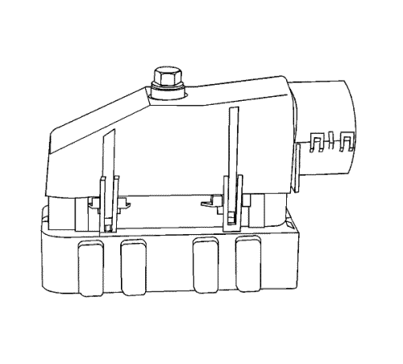
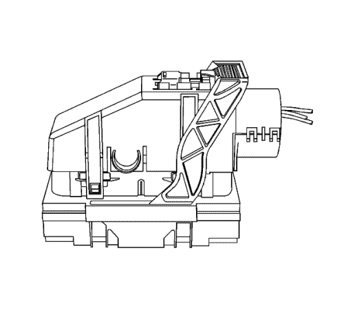
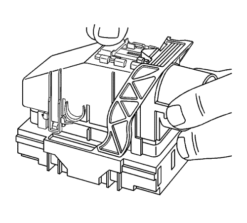
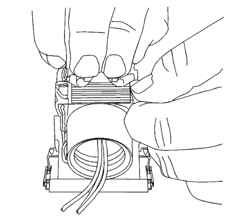
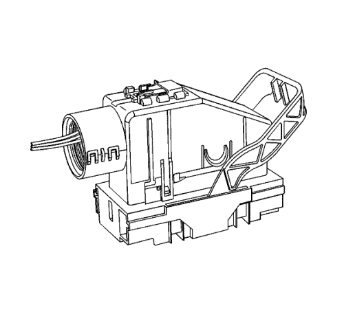
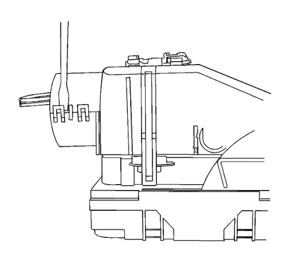
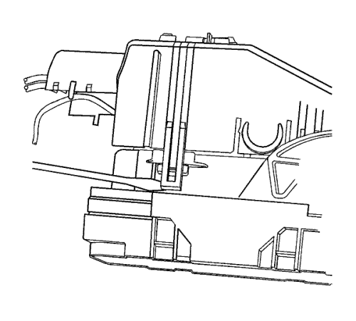
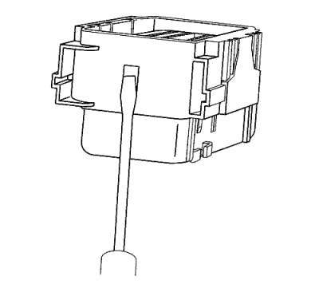
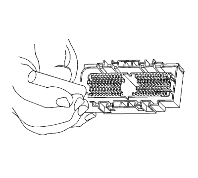

Conectores AFL/EPC
Herramientas especiales
| • | EL-38125-580 Juego de herramientas de liberación de terminales |
| • | Herramienta de desbloqueo de terminales J-38125-12A |
| • | J-38125-216 Herramienta de desbloqueo de terminales |
Si desea informarse sobre herramientas regionales equivalentes, consultar Herramientas especiales .
Procedimiento de extracción de terminales
Siga el orden de los pasos indicados más abajo para extraer los terminales del conector.

- Para conectores con un tornillo en la tapa, gire el tornillo en el sentido antihorario para extraer el conector del componente.

- Coloque el seguro de posición del conector (CPA) en la parte superior de la tapa del cable. Deslice el CPA hacia delante.

- Deslice el bloqueo de la palanca hacia delante mientras mantiene pulsada la lengüeta de desbloqueo del bloqueo de la palanca.

- Vista que muestra la pulsación de la lengüeta de desbloqueo del bloqueo de la palanca.

- Visualización de un conector en posición de desbloqueo.
- Separe el conector del componente.
- Coloque las pestañas de bloqueo de la tapa en las esquinas de la tapa. Utilice una herramienta pequeña de punta plana para soltar las lengüetas de bloqueo y extraer la tapa.

- Suelte la mitad inferior trasera de la tapa del cable.

- Suelte las lengüetas que sujetan la tapa del cable al cuerpo del conector.
- Extraiga la parte frontal introduciendo una herramienta pequeña de punta plana en las ranuras de los dos extremos del cuerpo del conector. Separe con cuidado la parte frontal del conector. También puede utilizarse el J-38125-216 para extraer la parte frontal.

- Utilice la herramienta J-38125-12A para soltar los terminales levantando las lengüetas de retención de los terminales en el interior del conector.

- Mientras mantiene en su sitio la herramienta de desmontaje, retire con cuidado el cable de la parte trasera del conector. Recuerde siempre que nunca debe utilizar la fuerza a la hora de retirar un terminal de un conector.
- Repare el terminal siguiendo el procedimiento Reparaciones del terminal del conector.
- Vuelva a insertar el terminal reparado en la cavidad. Repita el procedimiento de diagnóstico para verificar la reparación y vuelva a conectar los cuerpos de los conectores.
| © Copyright Chevrolet. Reservados todos los derechos |